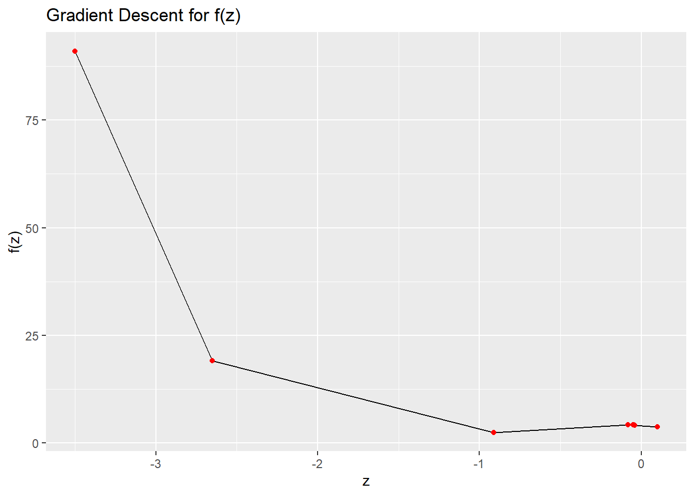

Consider \(g(x, y)\) given by \[
g(x, y) = (x - 3)^2 + (y - 4)^2.
\]
Using elementary calculus derive the expressions for
\[
\frac{d}{dx}g(x, y), \quad \text{and} \quad \frac{d}{dy}g(x, y).
\] Using your answer from above, what is the answer to \[
\frac{d}{dx}g(x, y) \Bigg|_{(x=3, y=4)} \quad \text{and} \quad \frac{d}{dy}g(x, y) \Bigg|_{(x=3, y=4)} ?
\] Define \(g(x, y)\) as a function in R, compute the gradient of \(g(x, y)\) with respect to \(x=3\) and \(y=4\). Does the answer match what you expected?
Plot the curve \(f\) and add taking \(\eta = 0.02\), add the points \(\{z_0, z_1, z_2, \dots z_{100}\}\) obtained using gradient descent to the plot. What do you observe?
f <-function(z) {return (z^4-6*z^2-3*z +4)}z <-torch_tensor(-3.5, requires_grad=TRUE)eta <-0.02z_list <-list(z$detach())for (i in1:100) { output <-f(z) output$backward() z$detach_() z = eta * z$grad z$requires_grad_() z_list[[i+1]] <- z$detach()}z_vals <-unlist(lapply(z_list, function(x) as.numeric(x)))f_vals <-unlist(lapply(z_list, function(x) f(x)$item()))df <-data.frame(z=z_vals, f=f_vals)ggplot(data=df, aes(x=z, y=f)) +geom_line() +geom_point(data=df, aes(x=z, y=f), color="red") +ggtitle("Gradient Descent for f(z)") +xlab("z") +ylab("f(z)")

1.5 (5 points)
Redo the same analysis as Question 1.4, but this time using \(\eta = 0.03\). What do you observe? What can you conclude from this analysis
f <-function(z) {return (z^4-6*z^2-3*z +4)}z <-torch_tensor(-3.5, requires_grad=TRUE)eta <-0.03z_list <-list(z$detach())for (i in1:100) { output <-f(z) output$backward() z$detach_() z = eta * z$grad z$requires_grad_() z_list[[i+1]] <- z$detach()}z_vals <-unlist(lapply(z_list, function(x) as.numeric(x)))f_vals <-unlist(lapply(z_list, function(x) f(x)$item()))df <-data.frame(z=z_vals, f=f_vals)ggplot(data=df, aes(x=z, y=f)) +geom_line() +geom_point(data=df, aes(x=z, y=f), color="red") +ggtitle("Gradient Descent for f(z)") +xlab("z") +ylab("f(z)")
Logistic regression and interpretation of effect sizes
For this question we will use the Titanic dataset from the Stanford data archive. This dataset contains information about passengers aboard the Titanic and whether or not they survived.
2.1 (5 points)
Read the data from the following URL as a tibble in R. Preprocess the data such that the variables are of the right data type, e.g., binary variables are encoded as factors, and convert all column names to lower case for consistency. Let’s also rename the response variable Survival to y for convenience.
# A tibble: 887 × 8
y pclass name sex age siblings parents fare
<fct> <fct> <chr> <dbl> <dbl> <dbl> <dbl> <dbl>
1 0 3 Mr. Owen Harris Braund 1 22 1 0 7.25
2 1 1 Mrs. John Bradley (Florence … 0 38 1 0 71.3
3 1 3 Miss. Laina Heikkinen 0 26 0 0 7.92
4 1 1 Mrs. Jacques Heath (Lily May… 0 35 1 0 53.1
5 0 3 Mr. William Henry Allen 1 35 0 0 8.05
6 0 3 Mr. James Moran 1 27 0 0 8.46
7 0 1 Mr. Timothy J McCarthy 1 54 0 0 51.9
8 0 3 Master. Gosta Leonard Palsson 1 2 3 1 21.1
9 1 3 Mrs. Oscar W (Elisabeth Vilh… 0 27 0 2 11.1
10 1 2 Mrs. Nicholas (Adele Achem) … 0 14 1 0 30.1
# ℹ 877 more rows
#head(df)summary(df)
y pclass name sex age
0:545 3:487 Length:887 Min. :0.000 Min. : 0.42
1:342 1:216 Class :character 1st Qu.:0.000 1st Qu.:20.25
2:184 Mode :character Median :1.000 Median :28.00
Mean :0.646 Mean :29.47
3rd Qu.:1.000 3rd Qu.:38.00
Max. :1.000 Max. :80.00
siblings parents fare
Min. :0.0000 Min. :0.0000 Min. : 0.000
1st Qu.:0.0000 1st Qu.:0.0000 1st Qu.: 7.925
Median :0.0000 Median :0.0000 Median : 14.454
Mean :0.5254 Mean :0.3833 Mean : 32.305
3rd Qu.:1.0000 3rd Qu.:0.0000 3rd Qu.: 31.137
Max. :8.0000 Max. :6.0000 Max. :512.329
2.2 (5 points)
Visualize the correlation matrix of all numeric columns in df using corrplot()
Fit a logistic regression model to predict the probability of surviving the titanic as a function of:
pclass
sex
age
fare
# siblings
# parents
full_model <-glm(y ~ pclass + sex + age + fare + siblings + parents, data = df, family =binomial())summary(full_model)
Call:
glm(formula = y ~ pclass + sex + age + fare + siblings + parents,
family = binomial(), data = df)
Deviance Residuals:
Min 1Q Median 3Q Max
-2.7773 -0.5991 -0.3984 0.6131 2.4412
Coefficients:
Estimate Std. Error z value Pr(>|z|)
(Intercept) 1.759755 0.283563 6.206 5.44e-10 ***
pclass1 2.350022 0.304666 7.713 1.22e-14 ***
pclass2 1.188532 0.229527 5.178 2.24e-07 ***
sex -2.756710 0.200642 -13.739 < 2e-16 ***
age -0.043410 0.007790 -5.573 2.51e-08 ***
fare 0.002823 0.002468 1.144 0.25277
siblings -0.401572 0.110795 -3.624 0.00029 ***
parents -0.106884 0.118767 -0.900 0.36815
---
Signif. codes: 0 '***' 0.001 '**' 0.01 '*' 0.05 '.' 0.1 ' ' 1
(Dispersion parameter for binomial family taken to be 1)
Null deviance: 1182.77 on 886 degrees of freedom
Residual deviance: 780.93 on 879 degrees of freedom
AIC: 796.93
Number of Fisher Scoring iterations: 5
2.4 (30 points)
Provide an interpretation for the slope and intercept terms estimated in full_model in terms of the log-odds of survival in the titanic and in terms of the odds-ratio (if the covariate is also categorical).
Recall the definition of logistic regression from the lecture notes, and also recall how we interpreted the slope in the linear regression model (particularly when the covariate was categorical).
print("The intercept term: if a passenger is a male in third class with no siblings, no parents, age zero, and fare zero, then the model estimates that the log-odds of survival would be 1.759755. The coefficient for sex, -2.756710, indicates that holding all other variables constant, females have a higher log-odds of survival than males.Tthe coefficient for pclass1, 2.350022, indicates that passengers in first class have higher log-odds of survival than passengers in second or third class. The coefficient for age, -0.043410, indicates that older passengers have slightly lower log-odds of survival than younger passengers.The coefficient for siblings, -0.401572, indicates that passengers with more siblings on board have lower log-odds of survival.The coefficient for parents, -0.106884, is not statistically significant at the alpha = 0.05, so not enough sufficient evidence to say there is a relationship between the number of parents on board and the log-odds of survival.")
[1] "The intercept term: if a passenger is a male in third class with no siblings, no parents, age zero, and fare zero, then the model estimates that the log-odds of survival would be 1.759755. The coefficient for sex, -2.756710, indicates that holding all other variables constant, females have a higher log-odds of survival than males.Tthe coefficient for pclass1, 2.350022, indicates that passengers in first class have higher log-odds of survival than passengers in second or third class. The coefficient for age, -0.043410, indicates that older passengers have slightly lower log-odds of survival than younger passengers.The coefficient for siblings, -0.401572, indicates that passengers with more siblings on board have lower log-odds of survival.The coefficient for parents, -0.106884, is not statistically significant at the alpha = 0.05, so not enough sufficient evidence to say there is a relationship between the number of parents on board and the log-odds of survival."
—
Question 3
70 points
Variable selection and logistic regression in torch
3.1 (15 points)
Complete the following function overview which takes in two categorical vectors (predicted and expected) and outputs:
Using the caret package, setup a \(5\)-fold cross-validation training method using the caret::trainConrol() function
controls <-trainControl(method="cv", number=5) #insert your code here
Now, using control, perform \(5\)-fold cross validation using caret::train() to select the optimal \(\lambda\) parameter for LASSO with logistic regression.
Take the search grid for \(\lambda\) to be in \(\{ 2^{-20}, 2^{-19.5}, 2^{-19}, \dots, 2^{-0.5}, 2^{0} \}\).
# Insert your code in the ... regionlibrary(glmnet)
Loading required package: Matrix
Attaching package: 'Matrix'
The following objects are masked from 'package:tidyr':
expand, pack, unpack
Loaded glmnet 4.1-7
X <-model.matrix(y ~ ., data = df)y <- df$ylasso_fit <-train(x = X,y = y,method ="glmnet",trControl = controls, tuneGrid =expand.grid(alpha =1,lambda =2^seq(-20, 0, by =0.5) ),family ="binomial")
Using the information stored in lasso_fit$results, plot the results for cross-validation accuracy vs. \(log_2(\lambda)\). Choose the optimal \(\lambda^*\), and report your results for this value of \(\lambda^*\).
library(ggplot2)ggplot(data = lasso_fit$results, aes(x =log2(lambda), y = Accuracy)) +geom_line() +geom_point() +scale_x_continuous(breaks =seq(-20, 0, by =2)) +labs(title ="Cross-validation accuracy vs log2(lambda)", x ="log2(lambda)", y ="Accuracy")
3.6 (5 points)
Create a summary table of the overview() summary statistics for each of the \(4\) models we have looked at in this assignment, and comment on their relative strengths and drawbacks.
—
::: {.callout-note collapse=“true”} ## Session Information
Print your R session information using the following command